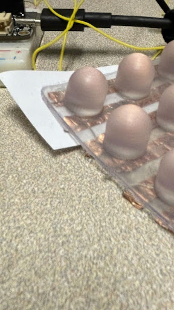
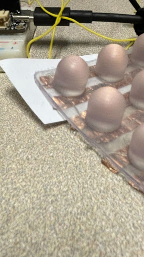
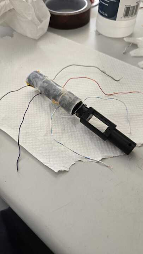
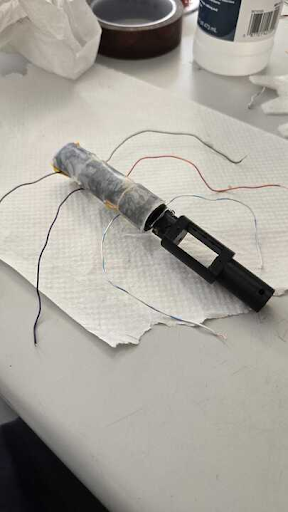

Kind Humanoid: Bio inspired Skin & Tactile Sensing
Situation
Achieving human-like touch sensing in humanoid robots requires not only accurate electronics, but also carefully engineered multilayer skin systems. The Kind Humanoid project sought to design, fabricate, and evaluate such a system by layering durable silicone, lightweight foam, and sensor-integrated PCBs. The goal was to replicate the friction, elasticity, and hardness of human skin while enabling capacitive and resistive force detection across robotic fingers and surfaces:contentReference[oaicite:1]{index=1}.
Manufacturing Process
Silicone Layer (Dragon Skin FX Pro)
The outer silicone skin was cast in custom 3D-printed molds with threaded luer lock injection ports and vent holes for uniform filling. The mixture (1:1 of Part A and B) was vacuum-degassed before being injected with a syringe to avoid air bubbles. Curing took ~40 minutes, producing a 1 mm thick flexible sheet:contentReference[oaicite:2]{index=2}.
Foam Layer (Flex-Foam VIII)
Polyurethane Flex-Foam VIII was used for its light weight and elastic deformation. A custom ratio of 1:1.6 (Part A: Part B) was optimized to achieve a porous yet resilient foam. Molds included vent holes to allow expansion and prevent decomposition. The foam expanded to ~7x its liquid volume and cured in ~2 hours:contentReference[oaicite:3]{index=3}.
Material Properties
Dragon Skin FX Pro
- Durability: toughness, tensile strength (~50 MPa), fatigue resistance.
- Elasticity: 763% elongation, Shore 2A hardness (similar to epidermis).
- Thermal stability: -60℃ to 230℃ operating range.
- Biocompatible platinum-cure silicone; skin-safe for human-robot interaction:contentReference[oaicite:4]{index=4}.
Flex-Foam VIII
- Lightweight: 8 lbs/ft³ density, improving finger dexterity.
- Elastic deformation with low Young’s modulus.
- Economical and scalable (~$36 per 2 lb trial kit).
- Mix ratio optimization critical: 1:1.6 A:B prevented tackiness or over-viscosity:contentReference[oaicite:5]{index=5}.
Design Iterations
Nib Design
Inspired by UC Berkeley’s Embodied Dexterity Group, small-scale “nibs” with 4 electrodes each were designed to detect shear forces and vibration. A 20×20 grid prototype reached densities of 16 receptors/cm² (approaching human fingertip density of 10/cm²). However, fabrication challenges (spacing electrodes under small nibs) limited implementation:contentReference[oaicite:6]{index=6}.
 

Finger Wrap Design
To fit robotic fingers, modular silicone wraps were designed with strain relievers and flaps. Option 1 prioritized secure fit and PCB integration, while Option 2 reduced interference with adhesives. The final design used silicone instead of foam for improved thinness and flexibility:contentReference[oaicite:7]{index=7}.
Electrical Schematics
Two PCB approaches were designed:
- Capacitive PCB: Grid of touchpads + multiplexers, LDO, capacitive ADC, and RP2040 microcontroller. Data sent via RS485 bus for robust communication:contentReference[oaicite:8]{index=8}.
- Resistive PCB: Velostat fabric layered with copper electrodes; resistance measured via ESP32 ADC.
Testing
Prototypes were tested with Arduino-controlled force application (10g → 100g). Capacitive foams showed delayed responses and hysteresis (~±1 unit). Resistive fingers gave unstable readings due to shorts. Overall, the tests revealed critical insights into material hysteresis, PCB design, and the need for better electrical isolation:contentReference[oaicite:9]{index=9}.
 

Prototypes
- Prototype 1: Shear-capacitive nib grid (discontinued due to fabrication limits).
- Prototype 2: Rough capacitive foam (too rigid, partial success).
- Prototype 3: Layered Dragon Skin + Flex-Foam + copper tape (detected force, delayed).
- Prototype 4: Resistive Velostat finger wraps (inconsistent, shorts).
- Prototype 5: Revised resistive with Velostat; detected force but limited sensitivity (>30N):contentReference[oaicite:10]{index=10}.
Result
While no prototype achieved robust fine-force sensing, the project produced:
- A validated manufacturing workflow for scalable silicone and foam robotic skins.
- CAD designs for modular molds, wraps, and high-resolution nib arrays.
- Working but limited capacitive and resistive PCB prototypes.
- Key insights into material hysteresis, electrical noise, and fabrication constraints.
This project laid the groundwork for future tactile sensing systems in humanoid robotics by combining soft material science with embedded electronics.